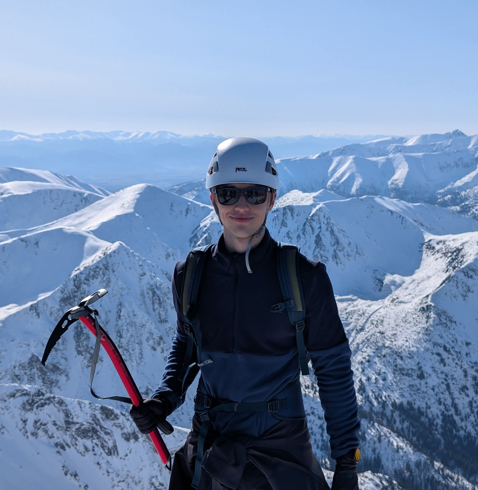

Nazywam się Piotrek. Moją wielką pasją jest szeroko pojęta aktywność górska – niezależnie czy mowa o trekkingu, wspinaczce, czy ferratach. Od kiedy pamiętam góry oraz sporty z nimi związane były dla mnie najlepszą opcją spedzania czasu. Na tej stronie pokaże kilka z moich wypraw..